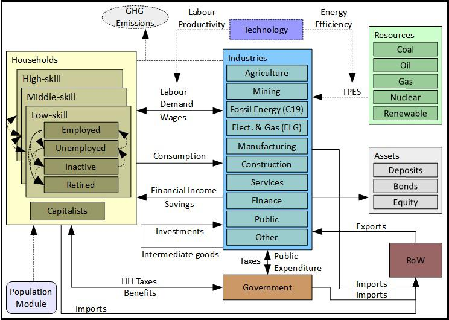
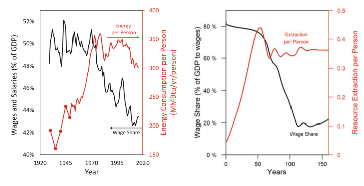
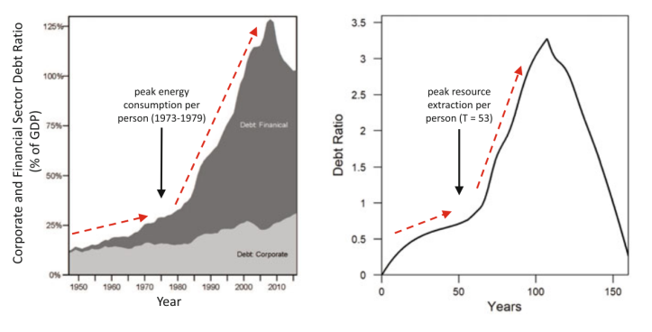

53 Economic Modelling
All models are wrong but some are useful.
It takes a model to beat a model.
53.1 Model-land
Thompson Abstract
Both mathematical modelling and simulation methods in general have contributed greatly to understanding, insight and forecasting in many fields including macroeconomics. Nevertheless, we must remain careful to distinguish model-land and model-land quantities from the real world. Decisions taken in the real world are more robust when informed by estimation of real-world quantities with transparent uncertainty quantification, than when based on “optimal” model-land quantities obtained from simulations of imperfect models optimized, perhaps optimal, in model-land. The authors present a short guide to some of the temptations and pitfalls of model-land, some directions towards the exit, and two ways to escape. Their aim is to improve decision support by providing relevant, adequate information regarding the real-world target of interest, or making it clear why today’s model models are not up to that task for the particular target of interest.

53.2 End of Theory
Bookstaber
The End of Theory: Financial Crises, the Failure of Economics, and the Sweep of Human Interaction
Our economy may have recovered from the Great Recession—but not our economics. In The End of Theory, Richard Bookstaber discusses why the human condition and the radical uncertainty of our world renders the standard economic model—and the theory behind it—useless for dealing with financial crises. What model should replace it? None. At least not any version we’ve been using for the past two hundred years. Instead, Bookstaber argues for a new approach called agent-based economics, one that takes as a starting point the fact that we are humans, not the optimizing automatons that standard economics assumes we are.
Bookstaber’s groundbreaking paradigm promises to do a far better job at preventing crises and managing those that break out. As he explains, our varied memories and imaginations color our economic behavior in unexpected hues. Agent-based modeling embraces these nuances by avoiding the mechanistic, unrealistic structure of our current economic approach. Bookstaber tackles issues such as radical uncertainty, when circumstances take place beyond our anticipation, and emergence, when innocent, everyday interactions combine to create sudden chaos. Starting with the realization that future crises cannot be predicted by the past, he proposes an approach that recognizes the human narrative while addressing market realities.
Sweeping aside the historic failure of twentieth-century economics, The End of Theory offers a novel and innovative perspective, along with a more realistic and human framework, to help prevent today’s financial system from blowing up again.
53.3 Jackson-Victor
The “new normal”: Hyper-Capitalism, Proto-Socialism, and Post-Pandemic Recovery
Jackson Abstract
Post-pandemic recovery must address the systemic inequality that has been revealed by the coronavirus crisis. The roots of this inequality predate the pandemic and even the global financial crisis. They lie rather in the uneasy relationship between labor and capital under conditions of declining economic growth, such as those who have pre- vailed in advanced economies for almost half a century. This paper explores the dynam- ics of that relationship using a simple stock-flow consistent (SFC) macroeconomic model of a closed economy. It examines in particular the role of two key factors—the savings rate and the substitutability (elasticity of substitution) between labor and capital—on the severity of systemic inequality under conditions of declining growth. The paper goes on to test the efficacy of three redistributive measures—a graduated income tax, a tax on capital and a universal basic income—under two distinct structural scenarios for an economy with a declining growth rate. We find that none of these measures is sufficient to control structural inequality when institutions aggressively favor capital over labor (hyper-capitalism). Taken in combination, however, under con- ditions more favorable to wage labor (proto-socialism), these same measures have the potential to eliminate inequality, almost entirely, even as the growth rate declines.
Jackson Memo
The two key structural factors, which determine the evolution of inequality under a declining growth rate, are (1) the savings rate and (2) the elasticity of substitution between labor and capital. Depending on the configuration of these factors, two radically different futures may emerge. Under one future, which we have described here as “hyper-capitalism” (Scenario 1), a constant savings rate and high sub- stitutability between capital and labor lead to accelerating inequality, even under a progressive combination of redistributive measures. Under another kind of future, which we describe as proto-socialism (Scenario 2), a declining savings rate and low substitutability between capital and labor, lead to declining inequality, which in combination with progressive redistributive policies, have the potential to eliminate inequality almost completely.
Hyper-capitalism is likely to emerge in a world where labor is increasingly (and easily) substituted with capital and the interests of the owners of capital are privileged over the rights of workers. These privileges encourage capitalists to continue to save even as the growth rate declines, leading to a rising capital to output ratio and an escalating inequality. Such a scenario could, for example, accompany a world in which an aggressive drive towards automation or the imple- mentation of artificial intelligence (AI) by monopolistic companies removes the need for wage labor across large swathes of the econ- omy. Failure to protect the livelihoods of the immiserated work force facilitates continued savings and investment by asset owners. By the same token, it concentrates incomes (and wealth) increasingly in a minority of the population, leading to the kinds of dystopian trends in inequality illustrated in Scenario 1. 13 Proto-socialism on the other hand aims for strong institutions to protect the rights of workers, introduce a job guarantee, and establish an adequate minimum wage. Such interventions slow down the sub- stitution of capital for labor. Attempts by capitalists to maintain a con- stant savings rate under these conditions lead (Figure 3a) to a dramatic collapse in the rate of return on investment, and a partial reversal in the relative fortunes of workers and capitalists. Faced with the prospect of declining rates of return, these conditions are more likely to lead to a decline in the rate of savings (Scenario 2) and a reduction in the capital intensity of the economy, features that will reinforce a more equal distribution of incomes. In short, proto-socialism is likely to involve a transition away from resource-intensive mass production processes and toward the evolu- tion of an economy of quality and service (Jackson, 2017). It might well also involve institutional innovations which better represent the interests of workers in the management of firms (Ferrera, 2017), bet- ter distribute the rewards of innovation to the populace (Varoufakis, 2016) and allow government to operate as an “employer of last resort” (Minsky, 1986). It will not have passed unnoticed that the sectors that emerge stronger under proto-socialism are precisely the labor-intensive sectors associated with care, distribution and maintenance—the frontline ser- vices of the pandemic—described at the beginning of this paper. Other labor-intensive sectors such as those associated with crafts, creativity, and community-based recreation and leisure (Jackson, 2021) are also likely to flourish under these conditions. Proto-socialism, in other words, could provide a robust basis for a post-pandemic recovery— even under conditions of low-growth.
Jackson (2021) Confronting inequality in the “new normal” : Hyper-capitalism, proto-socialism, and post-pandemic recover (pdf)
Thanks to (ProfTimJackson?) and Peter Victor. This paper is crucial to challenging the assumption, represented in the IPCC’s existing scenarios, that slower growth rates mean rising inequality. It all depends on policy, and the power of labour vis-à-vis capital. (Jason Hickel)
53.4 Eurogreen Model
Feasible alternatives to green growth
Abstract D’Alessandro
Climate change and increasing income inequality have emerged as twin threats to contemporary standards of living, peace and democracy. These two problems are usually tackled separately in the policy agenda. A new breed of radical proposals have been advanced to manage a fair low-carbon transition. In this spirit, we develop a dynamic macrosimulation model to investigate the long-term effects of three scenarios: green growth, policies for social equity, and degrowth. The green growth scenario, based on technological progress and environmental policies, achieves a significant reduction in greenhouse gas emissions at the cost of increasing income inequality and unemployment. The policies for social equity scenario adds direct labour market interventions that result in an environmental performance similar to green growth while improving social conditions at the cost of increasing public deficit. The degrowth scenario further adds a reduction in consumption and exports, and achieves a greater reduction in emissions and inequality with higher public deficit, despite the introduction of a wealth tax. We argue that new radical social policies can combine social prosperity and low-carbon emissions and are economically and politically feasible.
D’Alessandro (2020) Feasible alternatives to green growth (Paywall) SI (pdf)
D’Alessandro Presentation
Green Growth
The main response to the global challenges posed by climate change are currently based on Green Growth policy proposals, namely: • mainstream and institutional paradigm focused on technological optimism; • market-oriented view: trickle-down effect should improve welfare and job creation; • one-size-fits-all solution: GDP growth
Critiques to the ability of market mechanisms and innovations to: - foster material decoupling (Wiedmann, 2015) - meet planetary boundaries (Steffen, 2015, O’Neill, 2018) - avoid critical transitions (Scheffer, 2012) - ensure social justice: within-country inequality (Piketty, 2014) - overcoming the rebound effect: % RES and CO2 per capita
Green Deal
Recognizes the need to address inequality and environmental issues in a unified perspective combining social policies with green growth measures
Post-Growth
Advocates that continuous economic growth and ecological sustainability are incompatible: down-shift of economic scale. Social policies becomes essential to face inequality
EUROGREEN
A macrosimulation model tailored to compare the long-run effects, synergies and trade-off of these three alternative narratives.

Indicators
GHG emissions with respect to 1990. Targets: −40% in 2030 and −80% in 2050 • Gini coefficient for income inequality: from 0% (no ineq.) to 100% (max ineq.). Computed over 13 groups (3 skill by 4 work status + capitalists) including incomes from labour, financial assets and wealth • Deficit/GDP: fiscal sustainability • GDP growth • Unemployment: total and by skill • Energy Mix: shift in source composition in electric power generation and TPES.
Discussion
• Our results suggest that there are no win-win solutions • Similar reductions in emissions can result in radically different social consequences in terms of income distribution, employment, and fiscal stability. • Green Growth Paradox ⟹ The effectiveness of GHG reductions depends on the failure to promote GDP growth. • Techno-scepticism: Environmental policies alone fails to deliver the advocated improvements in employment and income distribution • Radical social policies (JG and WTR) can combine social prosperity and low-carbon emissions • Lower aggregate demand helps emission target achievement
D’Alessandro (2020) feasible Alternatives - Presentation (pdf)
O’Neill
** ‘Green Growth’ will increase inequality and unemployment unless accompanied by radical social policies.**
The economy is embedded within society, which is in turn embedded within the biosphere. Economic processes are therefore analysed in terms of flows of biophysical resources and social outcomes not just in terms of flows of money, as in conventional macroeconomic models.

Ecological macroeconomic models allow for multiple non-substitutable goals to be explored (e.g. sustainability, equity, and human well-being). These models have been developed to address issues such as the link between growth and inequality 5 and the effect of climate change on financial stability.
Green growth reduces greenhouse gas emissions, but inequality and unemployment both rise. The Green New Deal dramatically lowers unemployment and reduces inequality, but at the expense of an increase in the government deficit-to-GDP ratio. Degrowth reduces emissions and inequality further than the other two scenarios, but it leads to a higher increase in the deficit-to-GDP ratio (because GDP decreases). In short, there is no win win scenario.
These results have important implications. First, they suggest that a purely market-based green growth strategy is likely to have serious negative side effects. These side effects may be corrected by complementing environmental policies with strong social policies, such as working-time reduction, a guaranteed jobs programme, and a wealth tax. Second, the results suggest that degrowth can dramatically reduce environmental impact and lead to improved social outcomes (e.g. more leisure time, higher employment, greater equality), provided the appropriate policies are in place. Third, a Green New Deal, with an explicit focus on achieving a just transition 7 , may represent a compromise that advocates of both green growth and degrowth can support.
The Eurogreen Model makes a number of important contributions, but like any model it also has limitations. Importantly, the model does not assess whether the degree of decoupling assumed in its green growth scenario is actually possible, an assumption that has been challenged empirically.
The degrowth scenario does not include a number of additional changes that have been put forward by degrowth authors, such as alternative business models, new measures of progress, or public money creation 9 . For example, central banks could potentially create money to help fund a low-carbon transition (as they created money to bail out the banks), which would reduce the government deficit.
We need to choose our economic policies carefully. We cannot expect economic growth to deliver sustainability, or green growth to deliver social equity. If we want to achieve a sustainable and just society, then we need to move beyond the pursuit of growth, and target these outcomes directly.
ONeill (2020) Beyond Green Growth (pdf)
Russel (2020) Climate crisis: Is it time to ditch economic growth? (DW)
Mudge (2020) Fact check: Does climate protection stifle economic growth?
53.5 HARMONEY
King Abstract
This paper explains how the Human and Resources with MONEY (HARMONEY) economic growth model exhibits realistic dynamic interdependencies relating resources consumption, growth, and structural change. We explore dynamics of three major structural metrics of an economy. First, we show that an economic transition to relative decoupling of gross domestic product (GDP) from resource consumption is an expected pattern that occurs because of physical limits to growth, not a response to avoid physical limits. While increasing operational resource efficiency does increase the level of relative decou- pling, so does a change in pricing from one based on full costs to one based only on marginal costs that neglect depreciation and interest payments. Marginal cost pricing leads to higher debt ratios and a perception of higher levels of relative resource decoupling. Second, if assuming full labor bargaining power for wages, when a previously-growing economy reaches peak resource extraction and GDP, wages remain high but profits and debt decline to zero. By removing bargaining power, profits can remain positive at the expense of declining wages. Third, the internal structure of HARMONEY evolves in the same way the post-World War II U.S. economy. This is measured as the distribution of intermediate transactions within the input- output tables of both the model and U.S. economy.
King Memo
HARMONEY v1.1 is a system dynamics model centered on simulating a set of ordinary differential equations using stock-flow consistent tracking of monetary flows. HARMONEY v1.1 is still a toy model, which is to say it is not yet calibrated (we’re working on it!) to a real economy, such as the United States. Nonetheless, it has critical features and structural assumptions that make it applicable and valuable for comparing its trends to long-term trends in real-world data.
This is to say, an important part of HARMONEY is that it has a conservation of flow principle for both mass (as physical resources, energy or minerals, extracted from the environment) and money (at any given instant flows of money are tracked between firms, households, and private banks). While this idea has been around for many decades, this is still relatively unique for macroeconomic models.
Here are several assumptions in the design of the model that help explain why it can mimic long-term real-world trends relating energy consumption and economic variables
The resource that supports the economy is a regenerative renewable resource stock, such as a forest.
Resource (mass, energy) consumption is required for three purposes in the model, just like the real world: To operate machines (as fuel) To become new machines when they are manufactured (embodied in new capital) To “operate” or feed people to keep them alive (as food)
Money is effectively defined as all of the following the compensation labor (workers) receive, the profits received by companies, money (as credit) is created when banks give loans to companies to invest in capital at levels beyond their profits, and the money is destroyed when companies pay back debt, and the interest payments on the debt, or loans given to companies.
There is no government in the model.
Population declines when there is not enough resource consumption for households.
The HARMONEY model overcomes three neoclassical limitations:
the inadequate incorporation of natural resource consumption as required physical inputs to operate capital,become embodied in new capital investment, and keep people alive;
the lack of consideration of credit, or private debt, in a modern economy; and
the assumption that factors of production contribute to growth in relation to their cost share.
Unlike neoclassical growth theory (exogenous or endogenous), the post-Keynesian and biophysical structure of the HARMONEY model does not assume an aggregate production function, TFP, or directly impose scaling of GDP to aggregate labor, capital, or natural resources consumption. Thus, the model enables a different exploration into the effects of resource efficiency and whether the economy has similar energy-GDP scaling as biological systems, and for the same reasons, throughout a growth cycle.
Global primary energy consumption (PEC) and gross world product (GWP) scale approximately linearly from 1900-1970, and since 1970 scale sublinearly at \(PEC ∝ GWP^{2/3}\) Post-1980 trends show PEC of countries scales with their GDP nearly as \(PEC ∝ GDP^{3/4}\)
… explicitly considers the “energy cost of maintaining the structure and function” of an economy as a complex system …does not address the exact scaling (i.e., value of b) between energy consumption and GDP, but it explains why we expect a transition from superlinear or linear scaling to sublinear scaling, just as observed in biological systems.
…also contributes to the discussion of decoupling of GDP from PEC via increases in energy effi- ciency. Sublinear scaling in the economy, often referred to as a state of declining energy intensity (= PEC/GDP), is often seen as a consequence of increasing energy efficiency. …economy-wide rebound effects might erode more than half the reductions in engineering energy efficiency investments.
King Conclusion
The purpose of this paper was to explore the coupled growth and structural dynamic patterns of the HARMONEY model (v1.1) as updated from King (2020). The differences in the simulation results in this paper versus King (2020) derive from the more robust method in solving for prices and the explicit inclusion of wage bargaining power that augments a short-run Phillips Curve. Despite the assumption of a single regenerative natural resource (akin to a forest) to support the modeled economy, HARMONEY v1.1 exhibits several important high-level structural, biophysical, and economic patterns that compare well with global and U.S. data, and thus provide insight into long-term trends. The HARMONEY model provides a consistent biophysi- cal and monetary basis for explaining the progression in global and country-level data from an increasing or near constant energy intensity (energy consumption/GDP) to one of decreasing energy intensity. That is to say, both HAR- MONEY and global data first show a period of increasing growth rates, when the growth rate of natural resource con- sumption exceeds or is nearly equal to the growth rate of GDP, followed by a period of decreasing growth rates when the growth rate of resource consumption is lower than that of GDP. Thus, given this latter condition referred to as a state of relative decoupling, we conclude that it occurs due to a natural progression of self-organized growth, and not necessarily from independent conscious choice by actors within the economy to pursue resource efficiency. While we show that explicit choices to increase resource consumption efficiency in capital (e.g., machines) do increase the level of relative decoupling, we also show the choice of price formation affects apparent decoupling just as much. When basing prices on only marginal costs the econ- omy appears more decoupled than if prices are based on full costs that include depreciation and debt interest payments. Further, marginal cost pricing generates higher debt ratios than full cost pricing, implying higher debt levels might pro- vide only a perception of a more decoupled economy. Thus, relative decoupling of GDP from resource consumption rep- resents an expected stage of growth, still similarly dependent on resource consumption, rather than a stage during which an economy is less constrained by resource consumption. When assuming full labor bargaining power for wages, such that wages increase with inflation, once resource con- sumption stagnates, profit shares decline to zero and wage share increases. An explicit reduction in labor bargaining power at peak resource consumption enables some profits to remain. Thus, the HARMONEY model provides a basis for arguing that because profits decline to zero once resource consumption peaks under a full bargaining power situation, a new pressure emerges to reduce wage bargaining power of labor to ensure some level of profits at the expense of labor. This reasoning helps explain the wage stagnation and declin- ing wage share experienced in the U.S. since the 1970s.
King (2021) Interdependence of Growth, Structure, Size and Resource Consumption During an Economic Growth Cycle (pdf) (pdf SI)
King (2019) HARMONEY-1 (pdf) King Website
Fix on King
Figure shows King’s key result. Without tuning it to do so, the HARMONEY model predicts that as resource use plateaus, the wage share of income should decline (top right). It so happens that this is exactly what ocurred in the United States. As energy use (per person) plateaued, the wage share of income plummeted (top left). HARMONEY also predicts that after resource use peaks, debt (as a share of GDP) should explode and then later peak (bottom right). Again, the model’s prediction is eerily similar to US history (bottom left).
 
Figure: Results from King’s HARMONEY model. Top left: the wage share of income in the US declined as energy use per person plateaued. Top right: King’s HARMONEY model predicting the same phenomenon. Bottom left: The growth and peak of US corporate and financial debt. Bottom right: King’s HARMONEY model predicting the same phenomenon.
One more thing to mention is that HARMONEY does not use an aggregate production function. This is important, because there are many problems with such functions. Perhaps the most glaring flaw is that the standard production function (the Cobb-Douglas) is a tautology. It is a rearrangement of a national accounting identity. Hence, when systems modelers use such a function, they undermine what may otherwise be a sound model.3 By not using a production function, HARMONEY avoids this misstep.
53.6 Input-Output
Technology matrices (IO tables) theoretically capture the conditions of production. Most presentations counterfactually assume they are constant (e.g. constant returns to scale). However, once the matrices are allowed to vary with demand then they capture market value too.
53.7 LowGrow SFC
Jackson
A simulation model of the Canadian economy
LowGrow SFC is a system dynamics model developed by Tim Jackson and Peter Victor, incorporating many features developed over several years. LowGrow SFC brings together: 1) the environmental and resource constraints on economic activity; 2) a full account of production, consumption, employment and public finances in the ‘real economy’ at the level of the nation state; 3) a comprehensive account of the financial economy, including the main interactions between financial agents.
LowGrow SFC is ‘stock-flow consistent’. this means that expenditures by each sector are incomes of other sectors and financial assets of each sector are financial liabilities of other sectors, and vice versa. The 6 sectors in LowGrow SFC are: households, non-financial firms, financial firms, the central bank, government, and the rest of the world. Interactions within and between these spheres of interest are modelled using a system dynamics framework and used to generate scenarios for Canada.
[Jackson (2022) LowGrow SFC (https://timjackson.org.uk/ecological-economics/lowgrow-sfc/)]
Feygin on Keynes
When I read Keynes’ General Theory tThe part that really appealed to me was how he structured his argument. The GT is set up as an argument against “Say’s Law” – that supply creates its own demand through a price adjustment. Alex William’s blog is what you want to read if you want a chapter-by-chapter discussion of how the book is written and what Keynes argues. However, for our purposes, I want to emphasize that Keynes sets up his critique of Say’s Law not by rejecting it outright but by noting that it is a “special case.” In other words. the law can hold under some circumstances, but it is more informative in that it fails than that it holds at all times. The logic is really, really clean. Say’s Law is more normative than it is a law, and if it is not a law, then you have to do a lot of work to make it real: work that can be more destructive than helpful. In fact, I think that’s a lot of what conservative economic thought comes down to; making Say’s Law real.
I think we have the same problem when it comes to theories of growth and development in the context of the dollar debate and other related matters. We have a lot of “special cases” that are being discussed as theories.
53.8 Paul Romer
NY Times on Paul Romer
Paul Romer was once Silicon Valley’s favorite economist. The theory that helped him win a Nobel prize — that ideas are the turbocharged fuel of the modern economy — resonated deeply in the global capital of wealth-generating ideas. In the 1990s, Wired magazine called him “an economist for the technological age.” The Wall Street Journal said the tech industry treated him “like a rock star.”
Not anymore.
Today, Mr. Romer, 65, remains a believer in science and technology as engines of progress. But he has also become a fierce critic of the tech industry’s largest companies, saying that they stifle the flow of new ideas. He has championed new state taxes on the digital ads sold by companies like Facebook and Google, an idea that Maryland adopted this year.
And he is hard on economists, including himself, for long supplying the intellectual cover for hands-off policies and court rulings that have led to what he calls the “collapse of competition” in tech and other industries.
“Economists taught, ‘It’s the market. There’s nothing we can do,’” Mr. Romer said. “That’s really just so wrong.”
Mr. Romer’s current call for government activism, he said, reflects “a profound change in my thinking” in recent years. It also fits into a broader re-evaluation about the tech industry and government regulation among prominent economists. They see markets — search, social networks, online advertising, e-commerce — not behaving according to free-market theory. Monopoly or oligopoly seems to be the order of the day.
Of all the economists now taking on big tech, though, Mr. Romer is perhaps the most unlikely. He earned his undergraduate and doctoral degrees from the University of Chicago, long the high church of free-market absolutism, whose ideology has guided antitrust court decisions for years.
Mr. Romer spent 21 years in the Bay Area, mostly as a professor first at Berkeley and then Stanford. While in California, he founded and sold an educational software company. In his research, Mr. Romer uses software as a tool for data exploration and discovery, and he has become an adept Python programmer. “I enjoy the solitary exercise of building things with code,” he said.
“People I like are frequently unhappy with me,” he said.
Mr. Romer, who joined the faculty of New York University a decade ago, said that preparing for his Nobel lecture in 2018 prompted him to think about the “progress gap” in America. Progress, he explained, is not just a matter of economic growth, but should also be seen in measures of individual and social well-being.
n the United States, Mr. Romer saw worrying trends: a decline in life expectancy; rising “deaths of despair” from suicides and drug overdoses; falling rates of labor participation for adults in their prime working years, from 25 to 54; a growing wealth gap and increasing inequality.
Such problems, to be sure, have many causes, but Mr. Romer believes one contributing cause has been an economics profession that belittled the importance of government. His new growth theory recognized that the government played a vital part in scientific and technological progress, but mainly by funding basic research.
Looking back, Mr. Romer admits that he was caught up in the “small government bubble” of the time. “I substantially underestimated the role of the government in sustaining progress,” he said.
“For real progress, you need both science and government — a government that can say no to things that are bad,” Mr. Romer said.
53.9 Frederick Soddy
Reinert
The Nobel Prize winner that predicted a crisis between nature and capital.
A scientist who used much of his time on economics was rewarded a Nobel Prize in 1921. Admittedly, Frederick Soddy (1877–1956) received the prize in chemistry, for his work on radioactivity. But in the period from 1921 to 1934 Soddy wrote four books campaigning for a radical restructuring of the global monetary system.
‘There is no wealth but life’ is the basic message.
Placing money as a kind of enemy for humankind. Here is a new type of economics: we have standard neoclassical economics, based on the metaphor of equilibrium between supply and demand, and we have evolutionary (Schumpeterian) economics based on a metaphor from biology (innovations as mutations). Soddy offered us a third angle: economics rooted in physics, in the laws of thermodynamics.
Humans survive, he wrote, based on the use of natural resources. If these resources are exhausted, we shall be in deep trouble. At the time Soddy was not taken seriously, but he is now seen as a forerunner for ecological economics. Romanian-born economist Nicholas Georgescu-Roegen (1906–1994) continued working in this tradition.
Soddy points to the fundamental difference between the biophysical resources and consumables — what he calls ‘real wealth’ — that are subject to the laws of thermodynamics. This wealth will rot, rust, wear out, or be consumed. Money and debt — which he calls ‘virtual wealth’ — are only subject to the laws of mathematics. Money can grow without limits, whereas the real economy cannot. In this mismatch, says Soddy, lies the roots of most of our economic problems.
in a very informative New York Times op-ed in 2009, US ecological economist Eric Zencey (1953–2019) notes that Frederick Soddy had distilled his vision into five policy prescriptions, of which four since have become conventional wisdom: to abandon the gold standard, to let international exchange rates float, to use federal surpluses and deficits as macroeconomic policy tools that could counter cyclical trends, and establish bureaus of economic statistics (including a consumer price index). Soddy’s fifth proposal — the only one that remains outside today’s bounds of conventional wisdom — was to stop banks from creating money (and debt) out of nothing.
Reinert (2021) The Nobel Prize winner that predicted a crisis between nature and capital
53.10 Dennis Snower
Behavioural Economics can’t fix it
This is probably the most exciting and fruitful time ever to become an aspiring economist. Why? Because economics is reaching its Copernican Moment – the moment when it is finally becoming clear that the current ways of thinking about economic behavior are inadequate and a new way of thinking enables us to make much better sense of our world. It is a moment fraught with danger, because those in power still adhere to the traditional conventional wisdom and heresy is suppressed.
Behavioral economics began as a compendium of “anomalies” that the neoclassical system could not explain. Some of these anomalies have been addressed by behavioral theories such as prospect theory or social preference theory, but many have not. Different theories explain different anomalies; there is no overarching theory to explain them all.
And since behavioral economics is devoted primarily to individual fixes, it has retained many of the basic axioms above, such as methodological individualism, consumption as central for wellbeing, understanding economic events in terms of probability theory and the tendency toward equilibrium. However, these axioms are also open to question.
Regarding methodological individualism, who says that the individual is the only level of selection? After all, Homo Sapiens owe their evolutionary success largely to their ability to cooperate with one another, in larger number than other mammals.
Regarding consumption as central to wellbeing, who says that our material appetitive needs dwarf our social needs, such as the need to care and be cared for, or the need to belong to a community, or the need to shape your fate through your own efforts?
Regarding our ability to understand economic events in terms of probability theory, who says that we can imagine all conceivable future states of the world and that we can assign probabilities to each of them? After all, many of the most important events that young people look forward to in the future — whom they will marry, where they will live, what jobs they will get, how much they will earn, what their state of health will be, when they will retire, how long they will live — are simply unknown unknowns.
Not only has the neoclassical system encountered endless discrepancies between predictions and evidence and thus has accumulated endless fixes, but it also has had little success in addressing the great economic questions of our time. For example: If the free-market system is meant to satisfy our needs efficiently, why is it despoiling our environment? Why is it generating inequalities and other inequities that threaten the social cohesion of our societies? Why does it leave so many people economically insecure, vulnerable to unemployment and trapped in dead-end jobs? Why does it not correct for the excesses of consumerism, workaholism and digital addictions, frequently leading to anxiety, depression, burnout, substance abuse and crime? Why is it giving us so little guidance in promoting public compliance with social distancing rules during the Covid-19 pandemic, even though such compliance has economic causes and consequences? Why does it keep so many businesses focused on short-term profit and shareholder value, even though so many business leaders are genuinely concerned about the environment and the wellbeing of their customers and employees?
Now the practitioners’ patience with mainstream economics is wearing thin. Unlike the academic economists, the practitioners must actually address the great economic questions of our time.
Nor can the practitioners be content with the economists’ standard policy toolbox, since these instruments are obviously not overcoming the growing problems of climate change, social conflict, “deaths of despair,” containment of the Covid-19 pandemic, and much more.
And finally, the practitioners are no longer enamored by the mainstream narrative on the division of responsibilities.
Consumers in their millions are taking an interest in the social, political and environmental consequences of consumption and production activities, school children are out in the streets in protest about climate change, international organizations are beginning to measure economic performance beyond GDP (such as through the OECD’s Better Life Index and the UN’s Sustainable Development Goals), businesses are beginning to measure business performance beyond shareholder value (such as through Environmental, Social and Governance criteria along with the initiatives of the WEF International Business Council, the OECD Business for Inclusive Growth coalition, the Value Balancing Initiative, the British Academy’s Future of the Corporation programme), national governments are beginning to design budgets with regard to notions of wellbeing that extend beyond consumption of goods and services (such as New Zealand’ wellbeing budget). In short, the practitioners are not waiting for the mainstream economics profession to adjust to reality; instead, they are forging ahead on multiple fronts, extending the domain of economics to the existential challenges we face.
Fortunately, we now have access to a powerful body of thought that can guide this new encounter. The evolution of our natural world can be understood in terms of variation, replication and selection. The evolution of ideas can be understood in such terms as well: new ideas keep cropping up; they are transmitted from person to person; and the ideas that get selected to survive are often to be ones that enable us to navigate our environment most effectively. Selection can act not only on individuals, but also on groups. “Selfishness beats altruism within groups. Altruistic groups beat selfish groups. Everything else is commentary.”(E.O. Wilson and D.S. Wilson (2007), “Rethinking the Theoretical Foundations of Sociobiology,” Quarterly Review of Biology, 82(4), 327-348) The level of functional organization thus depends on the relative strength of within- and between-group selection.
This is a different starting point from the one underlying mainstream economics. The discipline of economics is based on classical physics, i.e. the inanimate world. Evolution, by contrast, is appropriate to the animate world. Not a bad point of departure for economics. After all, humans are living creatures. If we choose this path, economics will be reaching its Darwinian – not Copernican – Moment.
This is why now is probably the most exciting and fruitful time ever to become an aspiring economist.
53.11 Adam Smith
The invisible hand, it turns out, belongs to the long arm of investors in New York, Toronto, Zurich and other financial capitals. (Sasja Beslik)
Richard Smith
Adam Smith’s economics is an idea whose time has passed. Specialization, planless, anarchic production for market, single-minded pursuit of profit maximization at the expense of all other considerations, was the driving engine that generated the greatest advances in industrial and agricultural productivity, and also the greatest accumulation of wealth the world has ever seen. But that same engine of development, now immensely larger and running at full throttle, is overdeveloping the world economy, overconsuming the world’s resources, flooding the world’s waters and atmosphere with toxic and warming pollution, and propelling us off the cliff to ecological collapse, if not extinction. Adam Smith’s fatal error – fatal for us – was his assumption that the “most effectual” means of promoting the public interest, the common good of society, is to just ignore it and focus exclusively on the pursuit of individual economic self-interest.
Even with respect to the public interest of the economic welfare of society, Smith’s thesis that the invisible hand of the market would automatically bring about “universal opulence which extends itself to the lowest ranks of the people” as “a general plenty diffuses itself through all the different ranks of the society” could hardly have been more mistaken. Two-and-a-quarter centuries after Smith wrote, global capitalist development has produced the most obscenely unequal societies in history.
Two-and-a-quarter centuries after Smith wrote, global capitalist development has produced the most obscenely unequal societies in history, with half the world living on less than two dollars a day, billions of people living in desperate poverty, many times more than the entire population of the world in Smith’s day, while a tiny global elite, even just a few hundred individuals, concentrate an ever-growing share of the world’s wealth, which they lavish on “opulence” on a hitherto unimagined scale. On this breath-taking failure of social scientific prediction alone, Smith’s economic theory ought to have been ridiculed and drummed out of the profession long ago, as such a comparable predictive failure would have been in the natural sciences.
With respect to the public interest of broader societal concerns, which today would include the environment, Smith’s philosophy of economic individualism as the means to maximize the public interest – the common good of society – is not only completely wrongheaded, it’s suicidal. And it is completely at odds with the world’s scientists and scientific bodies who are crying out for a plan – a plan to stop global warming, to save the forests, to save the fisheries, to stop ocean acidification, to detoxify the planet, to save the thousands of creatures from extinction, etc.
Leaving the global economy in the hands of private corporations, subject to the demands of the market, is the road to collective eco-suicide.
Richard Smith (2015) Green Capitalism (pdf)
Noah Smith on Adam Smith
There’s a sort of popular myth that economics began with Adam Smith’s declaration that the “invisible hand” of the market would lead to a good society. In fact, while Smith did recognize the importance of market forces and self-interest, his vision of a good society didn’t stop there. Here are some Adam Smith quotes:
“Our merchants and masters complain much of the bad effects of high wages in raising the price and lessening the sale of goods. They say nothing concerning the bad effects of high profits. They are silent with regard to the pernicious effects of their own gains.”
“It is not very unreasonable that the rich should contribute to the public expense, not only in proportion to their revenue, but something more than in that proportion.”
“No society can surely be flourishing and happy of which by far the greater part of the numbers are poor and miserable.”
“Wherever there is great property there is great inequality. For one very rich man there must be at least five hundred poor, and the affluence of the few supposes the indigence of the many.”
“People of the same trade seldom meet together, even for merriment and diversion, but the conversation ends in a conspiracy against the public, or in some contrivance to raise prices.”
And so on. Adam Smith decries the existence of inequality and poverty, blames property rights for this inequality, advocates progressive taxation as a remedy, and is innately suspicious of profit. He sounds more like Thomas Piketty than Milton Friedman.
Smith’s suspicion of profit and enthusiasm for redistribution are baked into the very core of economic theory. The zero-profit condition says that in a well-functioning market, the rate of profit should be no more than the cost of capital — if you see companies making big margins, you should suspect that the market isn’t working right. This is the basis of the antitrust movement, which is again gaining strength in America with the appointment of Lina Khan to chair the FTC. Though there are a few populist firebrands in the antitrust movement, much of it is an intellectual movement driven by economists.
Meanwhile, Smith’s call for redistribution is inherent in the Second Welfare Theorem, considered one of the basic theorems of economics — and something that every intro student is taught. The Second Welfare Theorem says that if you change the initial distribution of wealth in society, you can basically get any outcome you like. This puts the burden of proof on those who think we shouldn’t redistribute wealth — it forces them to bring proof that the harms from taxation are just too high. Though there have been some economists who opposed redistribution, enthusiasm for the idea is traditionally very dominant within the profession. Even Milton Friedman, that great champion of laissez-faire, supported the idea of a negative income tax that would give people more cash the poorer they were.
And though economists do generally believe that very high taxes have some costs, a 2013 survey found that 97% of economists favored federal tax hikes, compared to only two-thirds of the general public, and a 2020 survey finds that most economists think raising the top marginal rate wouldn’t hurt economic growth.
Noah Smith (2015) Is economics an excuse for inaction?
Austin on Smith
In 1714’s The Fable of the Bees – among the first panegyrics to the market system – Bernard de Mandeville emphasized the market’s seemingly magical power to transmute the individual ‘Vice’ of greed into the ‘Virtue’ of greater good. Not only did the market have the power to neutralize greed, but it also positively required greed as, in modern terms, the multiplier of effective demand and hence the driver of the economy overall. 73 De Mandeville’s commendation of greed met strenuous and widespread objection. John Wesley, the contemporary theologian, condemned Mandeville as a latter-day Machiavelli: ‘…till now I imagined there had never been in the world such a book as the works of Machiavel. But de Mandeville goes far beyond it.’ 74 But events took their course, with the practical benefits of markets asserting themselves, such that Adam Smith – 60 years later! – could offer a more palatable account of market dynamics. Mandeville’s ‘vice’ became ‘self-love’ and ‘self-interest’ in Smith’s telling. Where Mandeville had been the radical breaking new ground, Smith had the luxury of placing a professorial seal on the matter for an audience already won over.
At the heart of this shift was a major cultural reappraisal of the character of ‘greed’ – or ‘Vice’ or ‘self-interest’ or ‘self-love’. Over a relatively short period, human culture flipped from a narrative of ‘greed is bad’ to an exciting new hypothesis: ‘greed might be OK, you know’. Over time, conviction would grow. By 1987, of course, ‘greed was good’.
Austin (2021) Market-led Sustainability is a ‘Fix that Fails’… (pdf)
53.12 Milton Freeman
Richard Smith
Adherents of the Chicago school simply deny that there is any environmental problem, certainly none that the market can’t solve. Thus, in a 1991 interview, Milton Friedman ridiculed environmentalists with his trademark condescending and nasty vitriol:
“The environmental movement consists of two very different parts. One is the traditional conservation groups, who want to save resources et cetera. The other is a group of people who fundamentally aren’t interested in conservation at all, and who aren’t primarily interested in pollution. They’re just long-term anti-capitalists who will take every opportunity to trash the capitalist system and the market economy. They used to be communists or socialists, but history has been unkind to them, and now all they can do is complain about pollution. But without modern technology, pollution would be far worse. The pollution from horses was much worse than what you get from automobiles. If you read descriptions of the streets of New York in the nineteenth century…”
And in his sadoeconomic screed Free to Choose, the anti-communist warhorse complained that:
“…whatever the announced objectives, all of the movements of the past two decades—the consumer movement, the ecology movement, the back-to-the-land movement, the hippie movement, the organic food movement, the protect-the-wilderness movement, the zero-population-growth movement, the ‘small is beautiful’ movement, the antinuclear movement—have always had one thing in common. All have been antigrowth. They have been opposed to new developments, to industrial innovation, to the increased use of natural resources. Agencies established in response to these movements have imposed heavy costs on industry after industry…” [and so on].
Friedman’s redneck eco-know-nothingism has long defined the far-right wing of US economic theology but his confident assumption that endless growth is sustainable is shared by the entire profession of mainstream economists.
53.13 Paul Krugman
Richard Smith
If we look at the far-left extreme of acceptable economic thought, say Paul Krugman, we hear the same “can’t stop progress” mantra: writing in the New York Times Krugman wonders “if there isn’t something a bit manic about the pace of getting and – especially – spending in fin-de-siècle America”:
“But there is one very powerful argument that can be made on behalf of recent American consumerism: not that it is good for consumers, but that it has been good for producers. You see, spending may not produce happiness, but it does create jobs, and unemployment is very effective at creating misery. Better to have manic consumers American style, than the depressive consumers of Japan… There is a strong element of rat race in America’s consumer-led boom, but those rats racing in their cages are what keep the wheels of commerce turning. And while it will be a shame if Americans continue to compete over who can own the most toys, the worst thing of all would be if the competition comes to a sudden halt.”
Paul Krugman is a brilliant economist but the Smithian premises of his theoretical framework cannot allow that we could actually run out of resources to make all those toys.
53.14 Herman Daly
Parrique
7 concepts from Herman Daly that will change your vision of economics.
1/ The ENVIRONMENTALLY EXTENDED INPUT-OUTPUT TABLE: bringing purely economic interactions, purely environmental interactions, and interactions between the economy and the environment into one comprehensive framework.
2/ The ENDS-MEANS SPECTRUM: political economy is the academic discipline that studies the use of intermediate means to produce intermediate ends.
3/ SCALE, DISTRIBUTION, ALLOCATION: a good scale is one that is sustainable, a good distribution is one that is just, and a good allocation is one that is efficient.
4/ The ECONOMIC PLIMSOLL LINE: the scale of the economy, like the cargo limit on a ship, should be determined first, and then distribution and allocation can follow.
5/ The INDEX OF SUSTAINABLE ECONOMIC WELFARE (ISEW) as an alternative indicator of prosperity to replace Gross Domestic Product (GDP).
6/ UNECONOMIC GROWTH: When growth has more costs than benefits, it becomes “uneconomic”.
7/ STEADY-STATE ECONOMY: “an economy with constant population and constant stock of capital, maintained by a low rate of throughput that is within the regenerative and assimilative capacities of the ecosystem.”
Parrique (2022) Twitter Thread
Richard Smith
Beyond growth or beyond capitalism?
Recent publications have revived interest in Herman Daly’s proposal for a Steady- State Economy. This paper argues, first, that the idea of a steady-state capitalism is based on untenable assumptions, starting with the assumption that growth is optional rather than built- into capitalism. I argue that irresistible and relentless pressures for growth are functions of the day-to-day requirements of capitalist reproduction in a competitive market, incumbent upon all but a few businesses, and that such pressures would prevail in any conceivable capitalism. Secondly, this paper takes issue with Professor Daly’s thesis, which also underpins his SSE model, that capitalist efficiency and resource allocation is the best we can come up with. I argue that this belief is misplaced and incompatible with an ecological economy, and therefore it undermines Daly’s own environmental goals. I conclude that since capitalist growth cannot be stopped, or even slowed, and since the market-driven growth is driving us toward collapse, ecological economists should abandon the fantasy of a steady-state capitalism and get on with the project figuring out what a post–capitalist economic democracy could look like.
Capitalism without growth?
In the 1970s and 80s, Herman Daly launched a broadside assault on the academic discipline of economics assailing its dogmatic and neo-totalitarian embrace of neoclassical economics and its willful blindness to our looming environmental crisis. In ground-breaking and widely influential books and articles Daly assailed the “stupor of economic discourse” by holding up to his colleagues what he called the “wild facts” of our ecological crisis: the growing hole in the ozone shield, the alarming evidence of rising CO2 levels, the shocking rates of natural resource consumption, the frightening rates of extinction and loss of biodiversity and so on, which mainstream economists ignored (and most continue to ignore to this day). The ecological crisis is caused, Daly argued, by too much growth: “the scale of human activity relative to the biosphere has grown too large” and most especially, by ever- growing consumption in the advanced industrialized countries. Daly attacked the mainstream’s “idolatrous” “religion of growth,” its “growthmania,” its “fetish” of limitless consumption. 13 Daly’s critique of the neoclassical defense of growth is probably the most devastating critique to come from within the profession. But despite his “radical” break with the mainstream’s fetish of growth, Daly did not at all break with his colleagues’ fetish of the market organization of production, the capitalist market economy. On the contrary. His proposal for a Steady-State Economy was based, he said, “on impeccably respectable premises: private property, the free market, opposition to welfare bureaucracies and centralized control.” So in his Steady-State model, Daly embraces capitalism but he rejects the consequences of market-driven economic development, especially overconsumption and environmental destruction.
For more than 30 years Daly has chanted his mantra of “development without growth” but he has yet to explain, in any concrete way, how an actual capitalist economy comprised of capitalists, investors, employees and consumers could carry on from day to day in “stasis”.
Daly rejects any such interference with market organization of production because, like his mainstream colleagues, he believes that “the market is the most efficient institution we have come up with” and the only option we have. 38 He can say this because he subscribes to a capitalist conception of efficiency. Capitalist economists since Adam Smith have defined economic efficiency from the standpoint of the production unit – the factory, mill, mine, etc. (which, conveniently, the capitalists own). So in capitalist terms, the most efficient production method, technology, or economic system is the one that gets the most output from the least input, so produces the cheapest widgets and generates the most product/sales/wealth for a given investment of labor and raw materials. So Daly says the market “is wonderful for allocation”. “Markets singlemindedly aim to serve allocative efficiency.”
Richard Smith (2015) Green Capitalism (pdf)
Vettese
53.15 Wassily Leontief
Leontief
An uneasy feeling about the present state of our discipline has been growing in some of us who have watched its unprecedented development over the last three decades. This concern seems to be shared even by those who are themselves contributing successfully to the present boom. They play the game with professional skill but have serious doubts about its rules.
The trouble is caused, however, not by an inadequate selection of targets, but rather by our inability to hit squarely any one of them. The uneasiness of which I spoke before is caused not by the irrelevance of the practical problems to which present day econo- mists address their efforts, but rather by the palpable inadequacy of the scientific means with which they try to solve them.
Tthe consistently indifferent performance in practical applications is in fact a symptom of a fundamental imbalance in the present state of our discipline. The weak and all too slowly growing empirical foundation clearly cannot support the proliferating superstructure of pure, or should I say, speculative economic theory.
Much is being made of the widespread, nearly mandatory use by modem eco- nomic theorists of mathematics. To the extent to which the economic phenomena possess observable quantitative dimen- sions, this is indisputably a major forward step. Unfortunately, any one capable of learning elementary, or preferably advanced calculus and algebra, and acquiring acquaintance with the specialized terminology of economics can set himself up as a theorist. Uncritical enthusiasm for mathematical formulation tends often to conceal the ephemeral substantive content of the argument behind the formidable front of algebraic signs.
In the presentation of a new model, attention nowadays is usually centered on a step-by-step derivation of its formal properties. But if the author—or at least the referee who recommended the manu- script for publication—is technically com- petent, such mathematical manipulations, however long and intricate, can even with- out further checking be accepted as correct. Nevertheless, they are usually spelled out at great length. By the time it comes to interpretation of the substantive conclusions, the assumptions on which the model has been based are easily forgotten. But it is precisely the empirical validity of these assumptions on which the useful- ness of the entire exercise depends.
What is really needed, in most cases, is a very difficult and seldom very neat assessment and verification of these assumptions in terms of observed facts. Here mathematics cannot help.
An attempt to compensate for the glaring weakness of the data base available to us by the widest possible use of more and more sophisticated statistical techniques. These are intended to stretch to the limit the meager supply of facts.
Like the economic models they are supposed to implement, the validity of these statistical tools depends itself on the acceptance of certain convenient assump- tions pertaining to stochastic properties of the phenomena which the particular models are intended to explain; assump- tions that can be seldom verified.
Continued preoccupation with imag- inary, hypothetical, rather than with observable reality has gradually led to a distortion of the informal valuation scale used in our academic community to assess and to rank the scientific performance of its members. Empirical analysis, according to this scale, gets a lower rating than formal mathematical reasoning.
Devising a new statistical procedure, however tenuous, that makes it possible to squeeze out one more unknown parameter from a given set of data, is judged a greater scientific achievement than the successful search for additional information that would permit us to measure the magnitude of the same parameter in a less ingenious, but more reliable way.
The pursuit of a more fundamental understanding of the process of production inevitably leads into the area of engineering sciences. To penetrate below the skin-thin surface of conventional consumption functions, it will be necessary to develop a systematic study of the structural characteristics and of the functioning of households, an area in which description and analysis of social, anthropological and demographic factors must obviously occupy the center of the stage.
Establishment of systematic coopera- tive relationships across the traditional frontiers now separating economics from these adjoining fields is hampered by the sense of self-sufficiency resulting from what I have already characterized as undue re- liance on indirect statistical inference as the principal method of empirical research.
An exceptional example of a healthy balance between theoretical and empirical analysis and of the readiness of professional economists to cooperate with experts in the neighboring disciplines is offered by Agricultural Economics as it developed in this country over the last fifty years. A unique combination of social and political forces has secured for this area unusually strong organizational and generous finan- cial support. Official agricultural statistics are more complete, reliable, and systematic than those pertaining to any other major sector of our economy. Close collaboration with agronomists provides agricultural economists with direct access to informa- tion of a technological kind.
Leontief (1970) Theoretical Assumptions and Nonobserved Facts (pdf)
Feygin
Leonteif was closely connected to these figures. He was trained in St. Petersburg by Kondratieff and, after his move to Germany, completed his Ph.D. under Bortkiewitz. You can see a lot of that heritage in Leonteif’s approach to economics. The Input-Output method has the reputation of being empirical rather than theoretical but that’s not really the case. Leonteif was never very friendly to institutionalists like Wesley Claire Mitchell and agreed that pure emperical stastical testing was not very useful to an economic theory.
However, the input output method itself is designed to add some illustration to intersectoral ties of the kind that were so central to the Legal Marxists. One of the ways we can see that heritage is through the centrality of technology to Leontief models. Leontief solves his model by assuming a static production function. In other words, unlike other econometric models, labor and capital don’t act like perfect substitutes at the aggregate because each sector has a different coefficient that is in fixed proportions and can only shift through technical progress of different production choices. Such a change has remifications through the model. Leontief I-O models are thus comparative statics at all times.
Leontief never believed in any kind of automatic supply and demand co-determination. His first publication caused a debate with father of econometrics Ragnar Firsch because Leontief published on a method to determine supply and demand elasticities as separate functions. In his further development, Leontief rejected simultanous equation approaches like the ones that came from Firsch’s research program through Haavelmo and Larry Klein and the Cowles Commission tradition. The latter group believed that models could only be fit in the reduced form; the fully solved system of equations in which all endogenous variables are functions of exogenous variables. In mathematical terms, that means reducing a matrix of endogenous variables – the structural form – into a vector that, as a linear structure, can be estimated using a least squares method of regression. Leontief’s models stayed at the structural level, meaning they relied on matrix inversions to inform inter-industry ties that supplied final demand. However, crucially, that meant that the only way to test a model was through surveying specific production functions since linear methods obscured the real functioning of technology.
Leontief methods are a big part of how we understand the economy to this day. They simply work better than many other emperical, econometric models because they are grounded in concrete realities of technical processes rather than assumptions about substituabilites. However, to really fulfill what Leontief wanted them to do – to help with the process of learning-by-monitoring they need to be put into a broader, politically embedded system of both data gathering and decision making. For that, we need other forms of governance models and mechanisms.
Feygin (2023) Economists We’ll Be Talking About: Wassily Leontief
53.16 Friedrich Hayek
Austin on Hayek
One might place the ‘free market’ at the top of this structure today as being among the latest cultural developments, made possible by formal property rights. Interestingly, Hayek, for all that he bequeathed us the neoliberal trap we find ourselves in, offered a very helpful phrase for capitalism. He didn’t much like the term, preferring to refer to the market system as the ‘extended order of human cooperation’. He was alert to the idea that the market had emerged out of earlier human cooperation to form something substantially new. With hindsight, his mistake that we are now suffering from is that in his eagerness to limit the powers of government, which might easily stray to authoritarianism, he overestimated the degree to which the ‘extended order’ market system could fully supersede the underlying layers in promoting long-term human wellbeing.
Austin (2021) Market-led Sustainability is a ‘Fix that Fails’… (pdf)
Jason Smith on Hayek
I am fully on board with the idea of a market as an information processing system, and that Hayek is key in the development of that idea. However, his essay The Use of Knowledge in Society [pdf] is at best out of date and should be relegated to the history of economic thought. There are a lot of hints at something that could make sense given our modern knowledge of information theory and communication, but nothing that does on close examination — only assertion and speculation.
To use a physics analogy, Hayek is Bohr, not Heisenberg. The general thrust of what would become quantum mechanics was pioneered by Bohr, but “old quantum theory” (as it is referred to these days) was wrong despite getting the leading order energy levels of the Hydrogen atom correct. It would take Heisenberg (and Schrodinger, and Dirac, and …) to nail down quantum mechanics. However, it seems very few people have genuinely taken Hayek as a new starting point for a re-invigoration of the field.
There are so many small decisions made in an economy there is no feasible way to collect all of the information required. That is to say the economic state space is both large and dynamic on a scale too short to survey the entire space. In physics, this same problem is addressed by an emergent theory called thermodynamics — it depends not just on the “law of large numbers”, but emergent concepts like entropy and temperature.
It is the movement of this fine-grained information throughout the economic state space that Hayek says is crucial to understanding economics:
The various ways in which the knowledge on which people base their plans is communicated to them is the crucial problem for any theory explaining the economic process, and the problem of what is the best way of utilizing knowledge initially dispersed among all the people is at least one of the main problems of economic policy—or of designing an efficient economic system.
This the primary place where Hayek both hints at the real problem, but is misguided about the solution. The issue is that the reason this information is invisible at the level of the macroeconomy is because of its scale, not because it is not communicated. In a complex modern economy, it is simply too large a state space to be communicated. It has millions, if not billions, of dimensions at the agent scale. We will never figure out how it is communicated and because we cannot actually compute a centrally planned solution given an objective function we will never be able to prove optimality.
Hayek proposes that the price mechanism provides the solution to the information problem he identifies.
Hayek first tells us there is a bunch of information that goes missing in statistical aggregates that needs to be communicated, but then turns around and says prices can communicate that information despite also dropping nearly all of it on the floor. “Don’t worry,” he says. “It keeps the relevant information! Trust me!”
The initial insight is there — that there is an immeasurable amount of fine-grained information that is fundamentally inaccessible at the level of the macroeconomy due to the scale and dynamic nature of it. However, the suggestion prices magically capture the right information is no different than the assertion that planning the commanding heights is sufficient to run an economy. Saying that prices aggregate or communicate that fine-grained information is fundamentally wrong; saying that they detect the flow of that fine-grained information is plausible and there are real world examples we can point to. Regardless, the fine-grained information is still invisible at the macro scale.
Information equilibrium is a concrete economic theory built on information flow in a social system. In contrast, there is no concreteness to Hayek’s arguments even where they are not self-contradictory.
Hayek’s essay is relevant background to modern economic thought, having influenced the field (mostly later on, via Milton Friedman). However it is probably better to know of the essay than to know the contents of the essay itself.
The essay conveys a kind of aristocratic detachment of someone who just enjoys hearing themselves talk.
The main problem in economics is understanding how dispersed knowledge required for planning is communicated, and the main problem of economic policy is finding the best way to use that knowledge.
This is supposed to be a genuine statement of the thesis.
Certainly, when one is stumbling in the dark around a new idea the language is not always clear. I do think Hayek was genuinely stumbling on to a new idea relevant in the nascent information age — one that germinated too early, before the advent of information theory.
Smith (2023) On Hayek’s “The Use of Knowledge in Society” (1945)
53.17 William Nordhaus
Bichler Nitzan
The LA Times called the bluff: William D. Nordhaus won the Nobel prize in economics for a climate model that minimized the cost of rising global temperatures and undermined the need for urgent action.
‘The economics Nobel went to a guy who enabled climate change denial and delay’:
It has been a scary month in climate science. Hurricane Michael and a frightening report from the U.N. Intergovernmental Panel on Climate Change underlined the potential costs of human-caused global warming. Then to add insult to injury, William Nordhaus won the economics Nobel Prize. Nordhaus was recognized for his work developing a model to guide policymakers on how best to address the costs and benefits of limiting greenhouse gases. That’s a noble goal, but Nordhaus’ work has no more helped to defuse the threat of global warming than Neville Chamberlain’s appeasement of Germany prevented World War II. Rather, Nordhaus’ low-ball estimates of the costs of future climate change and high-ball estimates of the costs of containing the threat contributed to a lost decade in the fight against climate change, lending intellectual legitimacy to denial and delay.
53.18 Axel Leijonhufved
Farmer on Leijonhufved
My view of modern macroeconomics is much like my view of modern Hollywood movies. The pyrotechnics are spectacular but the plots are sadly lacking.
Modern macroeconomics is a degenerative research program that took a wrong turn in the 1950s.
53.19 Karl Marx
Marx would have been a Firefox user
Soriano on Marx
Karl Marx was able, scientifically, to demonstrate that the planetary crisis is inevitable under capitalist production by revealing the causal concatenations of the metabolic rift, as a potential planetary crisis, with the particular form of labor exploitation under the capitalist mode in the context of his labor theory of value.
53.20 Amartya Sen
Selwyn on Sen
his work is two-sided (or contradictory). On the one hand, Sen punches big holes in mainstream explanations for manifestations of poverty and deprivation that are caused, often directly, by capitalist development. He also provides an approach to development that, on the surface, counters the emphasis on growth and capital accumulation.
On the other hand, Sen sets out a vision of development that promotes the expansion of capitalist markets. This two-sidedness stems from the fact that Sen can identify problems with capitalist development but is unable to penetrate the veil of capitalism itself.”Amartya Sen punches big holes in mainstream explanations for manifestations of poverty and deprivation that are caused, often directly, by capitalist development.”
His understanding of capitalism is shallow and rooted in the liberal ideology that presents it as a system based on market exchange between free agents, rather than one rooted in exploitative productive relations, as a Marxist framework would suggest.
There is much in Sen’s work that we can usefully deploy to develop a critique of capitalism. But this has to involve linking his insights to an alternative, labor-centered version of political economy.
Sen’s 1981 book Poverty and Famines was an essential intervention into the political economy of famine and the analysis and alleviation of hunger. Born in 1933, the economist grew up in British-controlled India and experienced firsthand the 1943 Bengal famine, in which at least three million people perished.
Dominant explanations of the Bengal famine as well as other famines and episodes of widespread hunger resort to food availability decline (FAD) arguments. Simply put, they argue that there were too many mouths to feed.”Sen’s 1981 book Poverty and Famines was an essential intervention into the political economy of famine.”
By contrast, Sen showed how in a series of cases, from Bengal in the 1940s to the Bangladesh famine of 1974, food was available at the time — often in higher quantities than during non-famine periods. Crucially, it was not the absolute volume of food that determined whether people died or lived, but the capitalist price mechanism.
Sen demonstrated that the Bengal famine was caused by rapid price inflation rather than crop failure. British military and civil construction investments, including air strips, barracks, munitions, and clothing for soldiers and civilians, fueled such inflation. It pushed up food prices in relation to agricultural wages, leaving agricultural laborers unable to afford food.
Since there was no general crop failure, peasants with access to land were relatively unaffected by price inflation. On the other hand, nonmilitary or civil construction wage workers, mostly in the rural sector, were particularly vulnerable. These sections of the wage-labor force bore the brunt of the catastrophe.
Sen’s arguments in Poverty and Famines were a necessary counterargument to the mainstream apologetics for mass hunger. Such arguments often ended up blaming the poor themselves for being too numerous, conveniently obscuring how the capitalist economy continually reproduces poverty.”Despite his perspicacity, even Sen himself underestimated the deliberately manufactured causes of the Bengal famine.”
However, more recent scholarship has shown that despite his perspicacity, even Sen himself underestimated the deliberately manufactured causes of the Bengal famine. His analysis is thus incomplete as an explanation for the persistence of global hunger.
Indian academic Utsa Patnaik’s study of the Bengal famine demonstrates how the price inflation in Bengal represented a deliberate British policy. This policy was recommended by none other than the famed liberal political economist John Maynard Keynes.
In the context of the UK’s wartime crisis, Keynes advocated “profit inflation” to achieve a “forced transference of purchasing power” from the mass of the population to the British exchequer. Military investments in Bengal were to be paid for by printing money, without regard for their impact upon the poor of the region.
The increased money supply pushed up prices, benefiting the region’s capitalists who were then taxed in turn by the colonial state. The state used these funds to raise its military investments in India itself while siphoning off surplus funds to the UK exchequer to finance its European war effort.
As Patnaik puts it:
Without deliberate state policy of curtailing mass consumption, over £1,600 million of extra resources could not have been extracted from Indians during the war, with the bulk of this enormous burden falling on the population of Bengal since the Allied forces were located in and operated from that province. The state policy was to induce a very rapid profit inflation which redistributed incomes away from the working population, towards capitalists and companies, which were then taxed.Sen’s emphasis on the capacity of the capitalist price mechanism to generate mortal threats to millions of people is indispensable for any analysis of the current world food crisis. But we also need to identify deliberate state policies designed to further weaken the poor and accelerate marketization.
The problem of world hunger now, as in the cases analyzed by Sen, is not insufficient food but rather the poverty and unequal power relations that are intrinsic to capitalism. The world’s poor simply do not have the money to pay for the food they need to live healthy lives.
Poverty and Famines largely ignored the collective action of workers to bring about improvements in their social conditions. This reflected a latent methodological individualism in Sen’s conception of social change, which came to the fore in his later work. As professor Pritam Singh told me, this means overlooking important forms of popular resistance during the 1943 famine:
The better organized working class in Calcutta forced the then British government in India to arrange for food for them and was thus significantly less affected than the scattered, illiterate, and unorganized rural population.Singh notes that the British government demolished refugee camps for famine victims, which worsened their conditions. Once again, it was the rural masses rather than what Singh calls the “more conscious and more organized urban population” who were the main targets of the colonial state.
Real democracy does not just mean the right to vote and the existence of a free press. In order to combat world hunger, our goal should not be to ramp up food production, but rather to establish the democratic distribution of power and resources. In particular, this would mean land reform under the democratic control of rural and urban workers.
In Development as Freedom, Sen noted that much growth-based development had the effect of suppressing freedom.
Sen adopted an individualistic conception of “people,” rather than a collective one. This constituted a major source of tension as he elaborated on his vision. For Sen, development as freedom meant expanding the abilities of individuals and thus the choices available to them, rather than simply increasing their incomes.
In Poverty and Famines, as we have seen, Sen showed that it was the capitalist price mechanism, not the availability of food per se, that functioned as the core determinant of whether the poor lived or died. Yet in Development and Freedom, he portrayed capitalist markets as spheres that promote freedoms, and called for the expansion of those markets as a remedy to the poverty and inequality they generate.
Sen’s analytical weakness derived from his understanding of capitalist markets as spheres of freedom. He conceptualized them as systems of exchange between individuals that all parties entered into freely, ignoring the reality of productive relations based on the exploitation of subordinate social classes.
We can still embrace Sen’s advocacy of real human freedom over economic growth. But this requires us to conceive of freedom as liberation from capitalist rule. Instead of “development as freedom,” it would be better to think in terms of “development as liberation.”
Selwyn (2023) Amartya Sen’s Work Shows Us the Human Cost of Capitalist Development
53.21 Ha-Joon Chang
Selwyn on Chang
Korean economist Ha-Joon Chang is a brilliant, best-selling critic of neoliberal orthodoxy. But Chang stops far short of taking the necessary next step: questioning the capitalist system itself.
Ha-Joon Chang is a rarity in the contemporary world: an economics professor who is highly critical of the neoliberal free-market orthodoxy, advocates progressive social change, writes and speaks accessibly, and is very, very popular.
Chang’s self-professed aspiration is to promote an alternative form of capitalism, but our goal should be to develop an alternative to capitalism.
Ha-Joon Chang rebuts this way of thinking as a modern-day exercise in mythology. He roots his own political economy in historical and institutional analysis, with theoretical generalizations derived from historical cases rather than abstract theory. His historical-institutional political economy is a breath of fresh air when compared to abstract free-market theories that are detached from social reality.
n his book Economics: A User’s Guide, Chang rejects, in admirably clear prose, the idea that we can identify a single set of economic laws governing the world. Rather, there is a wide range of economic thought, including Marxism, that we can deploy to understand (and change) the contemporary world.
Although he puts forward an effective critique of neoliberal orthodoxy, Chang is not committed to transcending capitalism, nor can he envision a successful noncapitalist society. In his own words, he wants to explain the workings of capitalism so that the system can be “made to work better.”
Chang’s political objective — to generate a better form of capitalism — and his mode of political economy also generate significant weaknesses in his analysis of really-existing capitalism. At crucial moments, he obscures the reproduction of capitalism through labor exploitation.
Another problem for Chang is the environmental toll of economic growth. This is a tension that he arguably cannot resolve in view of his commitment to capitalist, growth-based development. A Marxist approach to economics can offer solutions to such pressing problems.
In his book 23 Things They Don’t Tell You About Capitalism, he shows how markets have always been regulated by states.
It is politics and social norms, rather than a pristine “logic of the market,” that determine whether societies have better or worse wages and conditions, rates of investment and innovation, environmental regulation, health care, and so on.
Two of Chang’s books, Kicking Away the Ladder (2002) and Bad Samaritans (2007), challenge the free-trade, free-market orthodoxy known as the Washington Consensus. The author provides voluminous evidence to show how countries that are now highly developed made use of a whole range of protectionist and interventionist policies to transform their economies.
Chang shows how state planning can generate more rapid economic growth and more effective industrial diversification than free-market policies.
For Chang, the key determinant of whether countries can achieve economic development successfully is their ability to deploy an effective industrial policy.
Chang is correct to note that states can regulate investment through industrial policies to generate more rapid economic growth and industrial diversification. Yet he overlooks the way that such development often requires extreme exploitation of workers.
This gap in Chang’s analysis of successful developmental states partly stems from his historical-institutional version of political economy, which downplays the importance of shifting class relations in processes of historical change. It also stems from his political project, which is to create a better version of capitalism rather than an alternative socialist system.
Selwyn (2022) Ha-Joon Chang has exposed the fallacies of neoliberalism
53.22 Friedrich List
Selwyn on List
Much like Chang today, List subjected the dominant liberal orthodoxy of his own time to a withering critique. His aim was to help Germany to industrialize and compete effectively with Britain, the dominant economic and military power of the Victorian age.
As List wrote in his 1841 The National System of Political Economy:
It is a very common clever device that when anyone has attained the summit of greatness, he kicks away the ladder by which he has climbed up, in order to deprive others of the means of climbing up after him. In this lies the secret of the cosmopolitical doctrine of Adam Smith, and of the cosmopolitical tendencies of his great contemporary William Pitt, and of all his successors in the British Government administrations. Any nation which by means of protective duties and restrictions on navigation has raised her manufacturing power and her navigation to such a degree of development that no other nation can sustain free competition with her, can do nothing wiser than to throw away these ladders of her greatness, to preach to other nations the benefits of free trade.Much like Chang today, List provided a very effective critique of the free-market nostrums espoused by thinkers like Smith and David Ricardo. List was not interested in promoting a socialist society as an alternative to capitalism: he wanted more effective national forms of capitalism. Mutatis mutandis, the same is true of Chang today.
Selwyn (2022) Ha-Joon Chang has exposed the fallacies of neoliberalism
53.23 Robert Lucas
Noah Smith on Lucas
Lucas helped steer the profession toward the highly formalized mathematical models we now call “DSGE”, yet his own most influential paper used only simple math and logical arguments. Few of his own theories are used today, or even given much credence by macroeconomists, but his arguments about how to do economic theory — and how not to do it — remain the foundation of the field.
Lucas’ most famous work, by far — and the work that won him a Nobel in 1995 — was about how to fight recessions. In a landmark 1976 paper entitled “Econometric Policy Evaluation: A Critique”, he argued that the policies macroeconomists were recommending at the time made no sense, because they didn’t take people’s shifting expectations into account.
Suppose that you look at the past 50 years of macroeconomic history, and you notice that whenever inflation is high, unemployment is low. So you decide “Oh hey, I can use this fact to keep unemployment low forever, by having the central bank pump up inflation whenever there’s a recession!” Sounds clever, but the logic is flawed, because it doesn’t take human rationality into account. If businesses see that inflation is generally much higher than it used to be, they might reset their mental baseline — whereas before, they would take 4% inflation as the signal of an economic boom, and hire a bunch of workers, now 4% is just an average level of inflation, thanks to the new central bank policy. So now the central bank has to raise inflation by 6% to get businesses to think there’s a boom and hire a bunch of workers. Then 6% becomes the new normal, and so on. Eventually you either get hyperinflation, or you wind up with the same old level of unemployment at a much higher average level of inflation. Neither of those is a good outcome.
You can see why this line of argument resonated in the late 1970s.
So if human beings always catch on to whatever policy you’re trying to use to manipulate their behavior, what do you do? Lucas basically said you should do three things:
Assume that people catch on very quickly to whatever is happening in the economy, and adjust their expectations accordingly. (This is called “rational expectations”.)
Build a model of the economy that’s based on things that policy can’t easily change — technology, people’s preferences, resource constraints, and so on.
Have policymakers make policy according to set rules, instead of their own ad-hoc discretion, so that economists can analyze the effects of policies by looking at past data (since they’ll know that policy was constant). None of these three ideas were original to Lucas, and other economists had made versions of the same critique. But Lucas brought it all together. He combined a clear and forceful logical argument that economic theory was being done all wrong with a complete policy program for making it right. No one else had done that.
And in short order, all three of Lucas’ recommendations had been wholeheartedly embraced by the macroeconomics profession. Rational expectations became the basis of almost all macroeconomic theories. The quest for “structural” models of the economy led to what we now call Dynamic Stochastic General Equilibrium models, or DSGE. And the idea of monetary policy made by rules rather than discretion became a key feature of DSGE models.
In other words, macroeconomics after Lucas was Lucasian, and it remains largely so to this day. That doesn’t mean Lucas created absolute consensus in the field — most macroeconomists will have some kind of problem with at least one of Lucas’ basic ideas, and many will have problems with all three. But credible alternatives took a very long time to materialize. In the meantime, Lucas and the other macroeconomists he worked with — most notably Thomas Sargent and Edward Prescott — did a lot of work in the 1980s to solidify Lucasian macroeconomics into a paradigm that anyone in the field could pick up and use. That follow-up effort crystallized Lucas’ status as the most influential macroeconomist of his time.
Perhaps the most paradoxical thing about Lucas, though, was that although his most famous work was about business cycles, it wasn’t really the topic he cared about most. Over the course of his career, he shifted toward economic growth theory.
The growth model he developed in that 1988 paper was not considered to be particularly useful by growth theorists — its main conclusion, that you can grow an economy infinitely by continuing to build up ever more human capital, just isn’t credible; eventually people max out on schooling and skills. Later growth theorists, like Paul Romer (Lucas’ student, and another Nobel winner), would introduce more realistic models in which investment in researching new ideas takes center stage. But even these models are difficult to test empirically, and the question of whether research investment hits diminishing returns remains unresolved.
Ultimately, the kind of analysis that had propelled Lucas to superstardom in the world of business cycles was less effective when tackling the problem of economic growth. Lucas was at his best when he was using simple, powerful logic to criticize the assumptions behind economic theories. That kind of intelligence is inherently destructive — its purpose is to clear away the deadwood and point the direction to something newer and (hopefully) better. Constructing a theory of long-term growth is a different sort of challenge entirely, and doing the rigorous empirical work necessary to even start to test that theory was just not in Lucas’ wheelhouse. Fortunately, he did manage to direct some students like Romer toward the problem.
In the late 2000s and 2010s, Lucas’ attention was pulled back toward the field of business cycle theory that he had revolutionized three decades prior. The Great Recession seemed to upend many of the conclusions Lucas and his friends and disciples had reached about how recessions worked. It was caused by a financial crisis, which contradicted Ed Prescott’s technology-driven explanation of business cycles. It was the biggest downturn since the 30s, and monetary policy failed to contain it. The DSGE models that Lucas & co. had spent years ideating and promoting both failed to foresee the possibility of the crisis, and were too rigid and opaque to be of much help to policymakers in fighting it.
Cynics are going to look at this and wonder whether the whole Lucas research program was worth pursuing in the first place. What’s the point of thinking about the economy with the kind of simple, logical arguments that Lucas used in the 70s and 80s, if those arguments don’t lead to dependable conclusions about the economy? Why did all the brilliant macroeconomists who followed Lucas spend decades on theories that had to be replaced with ancient Keynesianism the next time a big recession came around?
Smith (2023) Thus passes Robert Lucas
Michael Roberts on Lucas
In 1995, Lucas received a ‘Nobel prize’ for his theory of ‘rational expectations’.
It is an irony, given the body of his work, that when Lucas started studying economics, he considered himself a “quasi-Marxist” because he reckoned that it was the economic foundation of society that was the driver of history, not the ideas of individuals. The irony is that his main contribution to mainstream economics was eventually to present a theory that economic change was driven by the ‘rational’ action of ‘agents’ i.e, individuals as consumers.
What is ‘rational expectations’ theory? Apparently, economic changes are the product of agents who make ‘rational’ decisions on the basis of available information to maximise the ‘utility’ for each agent over their lifetime. Individual agent expectations thus drive output and prices in an economy, not some aggregated forces like class or exploitation. As economies are driven by individual expectations, markets tend towards some equilibrium state that ensures supply and demand are balanced – and are only disturbed by ‘shocks’ or by wrong decisions by monetary and fiscal authorities.
Lucas was widely acclaimed because he furthered mainstream theory that markets could work without crises or distortions as long as individuals has sufficient information to make ‘rational decisions’ on their own interests. So the reality of crises and inequalities was due not to capitalist markets but to ‘irrational’ decisions by authorities or unions interfering with markets.
In particular, Lucas attacked the Keynesian ‘aggregate demand’ theory of economies, namely the Keynesian conclusion that total demand could fall below total supply in an economy, leading to periods of high unemployment. Lucas argued that if governments intervened to increase money supply or increase spending to boost aggregate demand, they would distort the ‘rational expectations’ of individuals and only make things worse.
A ‘bastardisation’ of the radical aspects of Keynesian theory,namely that capitalism did not grow smoothly and could not without periods of slump and depression. But now these only happened as ‘shocks’ to the harmony of the market. Lucas had succeeded in his critique in reducing Keynesian macro economics to a weak and feeble beast. No wonder he got a Nobel prize at the height of the neoclassical, neoliberal ascendancy in 1995.
The reality of ‘irrational’ capitalist markets eventually exposed Lucas’ rational expectations theory.